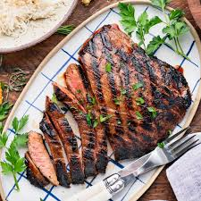

Marinated Flank Steak

Description
This crowd-pleasing flank steak marinade consists of the following ingredients: vegetable oil, soy sauce, red wine vinegar, lemon juice, Worcestershire sauce, Dijon mustard, garlic, and ground black pepper.
As long as you marinate the flank steak in the fridge for two to six hours, you'll have great results. However, for the absolute best results, marinate overnight or up to 12 hours.
Ingredients
Marinade:
- 1/2 cup vegetable oil
- 1/3 cup low-sodium soy sauce
- 1/4 cup red wine vinegar
- 2 tablespoons fresh lemon juice
- 1 1/2 tablespoons Worcestershire sauce
- 1 tablespoon Dijon mustard
- 2 cloves garlic, minced
- 1/2 teaspoon ground black pepper
Steak:
- 1 (1 1/2-pound) flank steak
Steps
- Gather all ingredients.
- Whisk together oil, soy sauce, vinegar, lemon juice, Worcestershire sauce, Dijon mustard, garlic, and pepper for marinade until thoroughly combined. Place steak in a 9x13-inch glass baking dish.
- Pour marinade over flank steak in the baking dish; turn several times to coat thoroughly with marinade. Cover, and refrigerate for 2 to 6 hours, or up to 12 hours if you have time.
- When ready to cook, preheat an outdoor grill for medium-high heat and lightly oil the grate.
- Remove steak from the marinade and shake off excess. Discard the remaining marinade.
- Cook steak on the preheated grill for about 5 minutes per side, or to desired doneness.
- Remove from the grill and let rest for 5 minutes before slicing and serving.
- Serve hot and enjoy!
Home